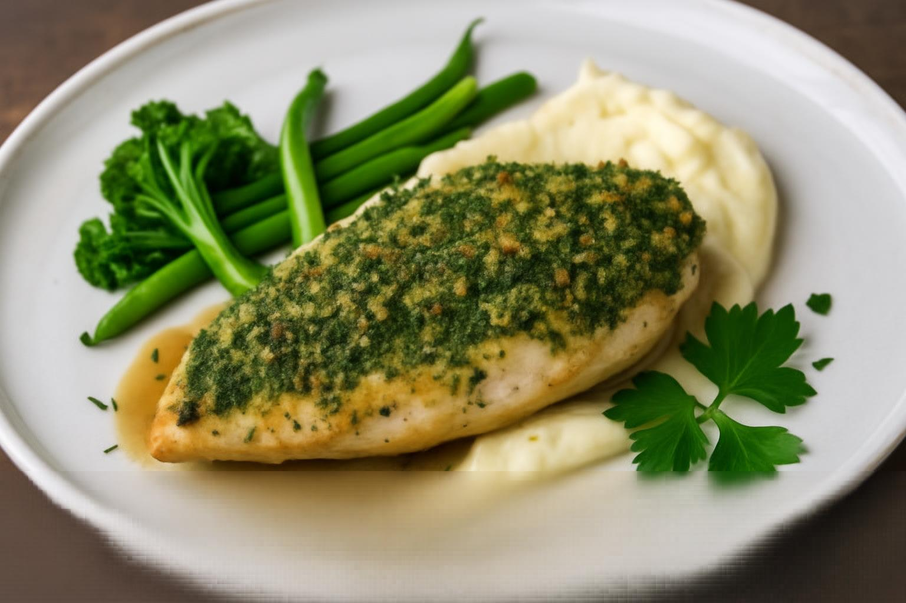

Lamb Saddle With Olive Tapenade

Ingredients:
- 1 lamb saddle, trimmed
- Salt and pepper
- Olive oil
- ½ cup black olive tapenade
- 1 aubergine, roasted and puréed
- 1 garlic clove, minced
- 1 tsp honey
- 1 tsp sherry vinegar
- Lamb sweetbreads (optional)
- Snowpeas, wild garlic
Instructions:
- Roast lamb saddle with garlic and olive oil.
- Mix aubergine purée with garlic, honey, and vinegar.
- Sauté sweetbreads if using.
- Plate lamb with tapenade, aubergine purée, and garnish.
Home